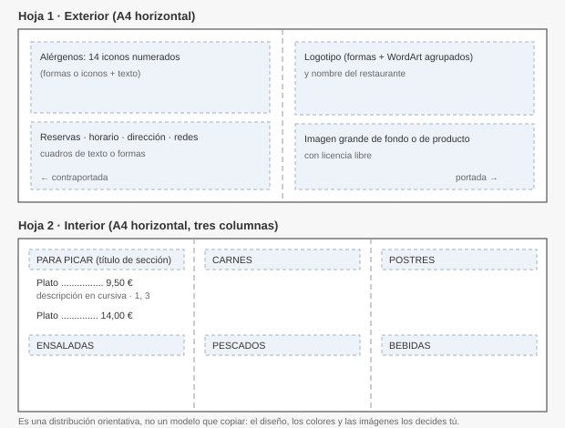

0223 · Aplicaciones ofimáticas · Tema 2
Caso práctico — La carta de un restaurante
Qué se evalúa · RA y criterios
Qué se evalúa
RA2. Elabora documentos y plantillas, describiendo y aplicando las opciones avanzadas de procesadores de textos.
- c) Se han utilizado aplicaciones y periféricos para introducir textos e imágenes.
Es un caso práctico del criterio c: cuenta en el apartado de casos prácticos del RA2. Cierra el bloque de maquetación del tema y junta lo que has practicado en el taller: estilos, tabulaciones, columnas, formas, imágenes y tablas.
1. El encargo
La Cereza Brava, un restaurante de cocina tradicional del Valle del Jerte, quiere renovar su carta. Será una hoja A4 apaisada impresa a doble cara y doblada por la mitad: por fuera, la portada y la contraportada; por dentro, los platos.
El restaurante, sus platos, su teléfono y sus redes son inventados.
⬇ Descargar
carta-contenido.docx — todos los textos, sin formato:
- Los textos del exterior: nombre, eslogan, reservas, horario, dirección, redes, avisos y la lista de los 14 alérgenos numerados.
- Los textos del interior: seis secciones y sus platos. Cada
plato ocupa dos líneas:
Nombre | Precio | Alérgenosy, debajo, su descripción.

2. Requisitos técnicos
Son obligatorios. Al lado de cada uno tienes dónde lo aprendiste.
R1 · Página y secciones
- A4 horizontal, márgenes estrechos (1,27 cm) y exactamente dos páginas: la 1 es el exterior y la 2 el interior.
- Entre las dos páginas, un salto de sección (página siguiente), para que cada una tenga su propio diseño de columnas. (2.2)
R2 · Interior a tres columnas
- La página 2 a tres columnas (
Disposición > Columnas), solo en esa sección. - Para pasar a la columna siguiente, salto de columna
(
Disposición > Saltos > Columna), nunca una fila de Intros. (2.2)
R3 · Estilos propios
Crea al menos tres estilos y aplícalos a todos los textos del interior: (2.2)
- Sección carta, basado en Título 1, para «PARA PICAR», «ENSALADAS»… Si lo decoras (sombreado, borde, color), que sea dentro del propio estilo.
- Plato, para la línea del nombre y el precio.
- Descripción, para la línea de debajo: más pequeña, en cursiva y pegada al plato.
Prueba de que funciona: el Panel de navegación muestra las seis secciones, y al cambiar el color del estilo Sección carta cambian las seis a la vez.
R4 · Precios con tabulación
- El precio de cada plato, pegado al margen derecho de su columna con una
tabulación derecha con relleno de puntos, definida
dentro del estilo Plato (
Modificar estilo > Formato > Tabulaciones). (2.2 y T1) - Truco: con
Buscar y reemplazarcambia|por^ty te ahorras poner las tabulaciones a mano en treinta platos. (2.1)
R5 · Alérgenos
- En la contraportada, una leyenda con los 14 alérgenos:
cada uno con un icono y su nombre. Los iconos pueden ser formas (un círculo de
color con el número dentro) o iconos de
Insertar > Iconos. Usa una tabla sin bordes para ordenarlos. (2.3 y T3) - En cada plato, los números de sus alérgenos, en un tamaño pequeño o en superíndice.
R6 · Portada y logotipo
- Un logotipo propio hecho con formas y WordArt,
agrupados en un solo objeto (
Formato de forma > Agrupar). (2.3 y T3) - El nombre del restaurante y el eslogan.
R7 · Imágenes
- Al menos dos imágenes; una de ellas, de fondo o detrás del texto, con el ajuste adecuado y la transparencia o el brillo necesarios para que el texto se lea. (2.3)
- Todas con texto alternativo.
- Solo imágenes con licencia libre: las de
Insertar > Imágenes > Imágenes de stock, o de bancos como Pexels, Unsplash o Pixabay. En la contraportada, en letra pequeña, indica de dónde salen.
R8 · Legibilidad
- Como mucho tres fuentes distintas en toda la carta.
- Buen contraste entre texto y fondo, y ni una falta de ortografía.
R9 · Lista para imprimir
- Exportada a PDF (
Archivo > Guardar como > PDF). (2.5) - Haz una vista previa a doble cara: para que el interior no salga al revés, se imprime con Voltear las páginas por el borde corto.
3. Orden de trabajo
| Sesión | Qué haces |
|---|---|
| 1 | Página y secciones (R1). Pega el contenido del interior, crea los tres estilos, aplícalos, sustituye las barras por tabulaciones y fija la del precio (R3, R4). Pon las tres columnas y los saltos de columna (R2). |
| 2 | Contraportada: datos de contacto y la leyenda de alérgenos (R5). Pon los números de alérgenos en los platos. |
| 3 | Portada: logotipo agrupado, imágenes y textos (R6, R7). Ajusta colores y fuentes (R8). |
| 4 | Revisión con la lista de comprobación, ortografía, PDF y vista previa a doble cara (R9). Entrega. |
4. Qué se entrega
Entrega en Moodle (tarea «Caso práctico: carta del restaurante»):
Carta_Apellido_Nombre.docx — el documento editable.
Carta_Apellido_Nombre.pdf — la versión para imprimir.
Sin tildes, sin eñes y sin espacios en los nombres de archivo.
5. Cómo se evalúa (rúbrica, 10 puntos)
| Apartado | Qué se mira | Puntos |
|---|---|---|
| Página, secciones y columnas | R1 y R2: dos páginas A4 horizontales, salto de sección, tres columnas solo en el interior, saltos de columna | 1,5 |
| Estilos | R3: tres estilos propios bien definidos y aplicados a todo el interior; el panel de navegación funciona | 2 |
| Precios | R4: tabulación derecha con relleno dentro del estilo; ningún precio alineado con espacios | 1,5 |
| Alérgenos | R5: leyenda completa y ordenada, y números en todos los platos que los tienen | 1,5 |
| Portada, logotipo e imágenes | R6 y R7: logotipo agrupado, imágenes con ajuste adecuado, texto alternativo y origen indicado | 2 |
| Diseño y legibilidad | R8: coherencia visual, contraste, número de fuentes y ortografía | 1 |
| Entrega | R9: PDF correcto, los dos archivos y nombres según lo indicado | 0,5 |
| Total | 10 | |
En cada apartado: completo (puntuación entera), con fallos puntuales (la mitad) o no conseguido (0). Un apartado que se ve bien pero está hecho con trucos (precios con espacios, columnas a base de Intros, títulos con formato a mano) cuenta como no conseguido.
6. Errores que cuestan puntos
- El interior también sale apaisado pero con una sola columna: las columnas se aplicaron a todo el documento o no hay salto de sección.
- Un plato se parte entre dos columnas: activa Conservar con el siguiente en el estilo Plato para que no se separe de su descripción.
- Las imágenes saltan al escribir: tienen el ajuste En línea con el texto. Usa Detrás del texto o Delante del texto y fija su posición en la página.
- Sale una tercera página en blanco: hay un párrafo vacío al final. Bórralo o reduce su tamaño a 1 pt.